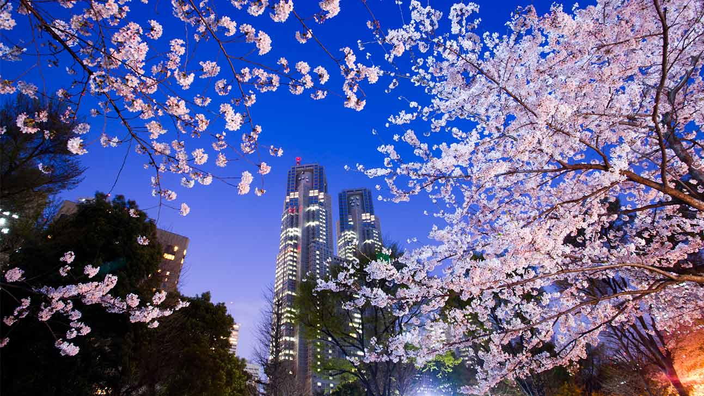

賞櫻
日本的賞櫻可說是國民的活動，每年三月底四月初會迎向大規模的櫻花季
日本各地到處都種了許多染井吉野櫻，這是日本各地廣泛栽種的櫻花代表園藝品種
各位看到的日本櫻前線都是預測染井吉野櫻，因為他的數量最多
開花時可以看到處處都是數大便是美的爆開櫻花，非常驚人。
但其實櫻花有早開也有晚開的櫻種
比方說最有名的早開櫻種就是河津櫻，會在二月就在伊豆綻放。
另外，關西櫻種比東京豐富，所以早到晚到都會有得看的。
櫻花何時開
日本櫻花花期由南至北，最早約於3月中在九州綻放，最遲於5月開至北海道。
近年由於地球暖化，東京市區多半提早在三月底開花，關西稍晚個幾天。
開花的時候，櫻花樹上大約還有百分之五十到七十都是花苞。當開到百分之八十的時候，就是滿開。
如果從開花日之後，看氣溫決定，約要五到七天才會呈現滿開狀態，此時最美。
（但如果2009~2011年一樣又變冷，十多天都有可能）滿開之後，也是大約五到七天才會完全落盡，變成葉櫻。
當然這是天氣好的話，如果有大風大雨在後幾天發生，可以在一天之內就落盡！
訂何時的機票
櫻花何時開，在三月中應該就比較有譜了。但是看到再訂機票，可能很難訂，手腳要快。
訂開花日後約3~5天到理論上最理想，您可先猜個日子，訂位還不用開票，到時再隨機應變。
可以在不同家航空公司訂不同航點(同家公司最好不要重覆訂位，會被取消)
反正通常最後開票日前，櫻花開花預報都出來了，可以再決定取消哪一個訂位。
但近年來很多特價票都有要求要很快開票，所以這有可能不可行了。
如果不幸遇到氣候異常，太早開或太晚滿開，也是有變通的。平地的櫻花謝了，山上可能還開著。
北方的沒開，南方的可能正好滿開，頂多買個JR pass到處跑，應該一定看的到。
參考資料
http://linshibi.com/?p=1608